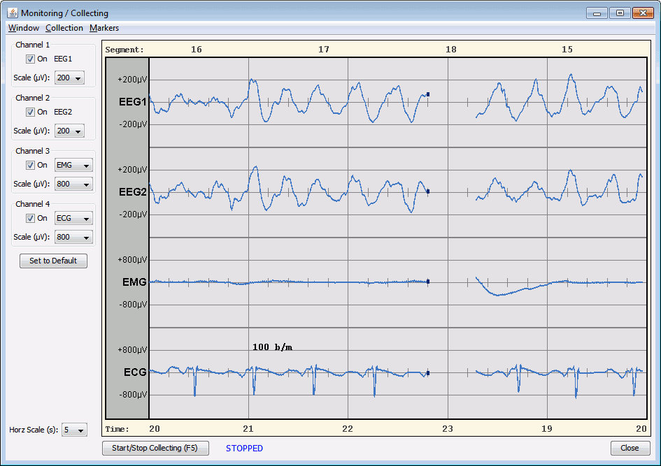

Getting Started
On this Page
- Starting Up
- Initial User Account
- Patient List
- Treatment List
- Monitoring Window
- Reviewing a Treatment Graph
- Exiting GPD
Starting Up
You'll need to generate license information the first time you run the program. Enter the name of the user or institution in the License Name field, and then click Generate Key. The License Key field will be filled in, and then click Validate License to proceed to the Login window.
After you enter your license information, you'll be presented with the Login window:
Initial User Account
By default GPD will create a user with the same username as your Windows login, with a blank password (not your Windows password). You can either use this account as-is, or proceed below to create a custom GPD account or change your password.
To create a user account:
Click Create/Manage Users (no password is needed by default). The Manage Users window will appear:
Click New User and choose your username.
The new user will appear in the USERS list; select the user and click Change Password to set the password for that user. You may leave the password blank if you want to be able to log in without a password.
If you want to restrict who may create and delete users, set an administrator password by typing the password into the text field and pressing the Set Admin Password button.
Now, back at the Login screen, enter your username and password and click Login, and you're be presented with the Patient List.
Patient List
On the left is a list of the user's patients, and on the right is the editable information for the selected patient.
Click New Patient, enter a name and ID, and the created patient will appear in the table to the left.
Double click the patient in the table to go to the Treatment List for that patient.
Treatment List
Here you see all the treatments for a given patient, listed by treatment date in descending order (most recent at the top). Click a treatment in the list to see its information in the pane on the right.
To see real-time monitoring graphs and collect data for a new ECT treatment, click the COLLECT NEW button at the bottom of the treatment list, which will open the Monitoring window.
Monitoring Window

In its default configuration, GPD will begin monitoring as soon as the window is open. Once your collect baseline on the Thymatron, it will begin transmitting real-time data via its RS232 serial connection.
If you have more than one serial port on your computer, you may need to select the appropriate port using the Collection menu → COM Port combo.
You can show or hide channels, and change each channel's vertical scale, using the controls on the left of the window. The horizontal scale is controlled by the combobox on the bottom left. The time (in seconds) is displayed at the bottom of the graph, and the segment numbers (each segment being 1.28s) on the top.
For most efficient data upload from the Thymatron, turn on autoupload of all data (FlexDial→UPLOAD→LOAD RAW), so that when the user presses Start/Stop post-treatment, the Thymatron will automatically send complete treatment data to GPD.
Once GPD receives treatment data from the Thymatron, the Monitoring screen will close and you will see the new treatment at the top of the Treatment List. Selecting the new treatment will show the treatment report, with the same information as the report printed by the machine, in the right text pane.
Reviewing a Treatment Graph
In the Treatment List, if you double-click a treatment (or press Enter or click the View button) the treatment graph will invoke the Review Treatment window. By default, treatments will have both DAT and GPDT files associate with them. The DAT contains only post-treatment data as sent by the Thymatron, while the GPDT contains all data since you started monitoring. You need to choose which one of these two files to view.
The channel and scale controls are much like the Monitoring/Collection window, but rather than seeing the real-time graph sweep across the screen, you can use the scrollbar below the timeline to navigate to any point in the traces.
Exiting GPD
Close the Treatment List to return to the Patient List; close the Patient List to return to the Login screen; close the Login screen to exit GPD.